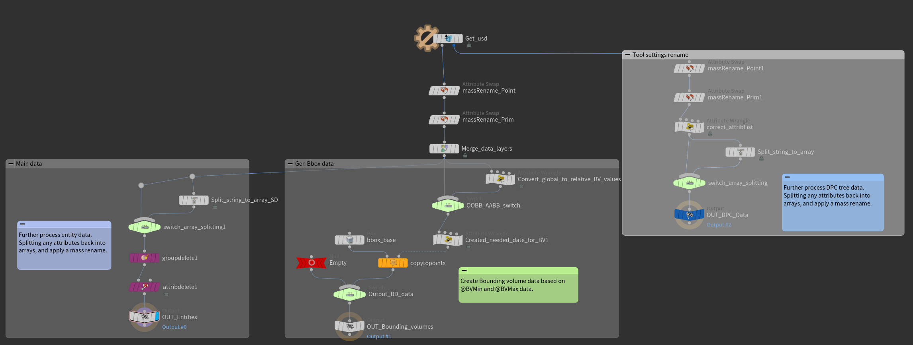
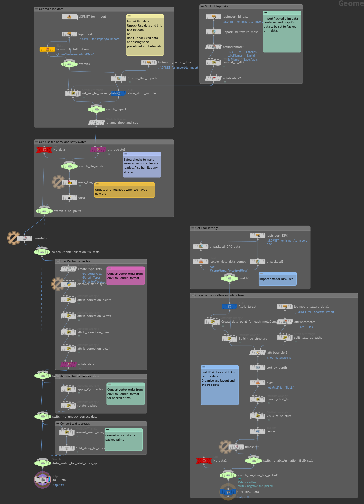
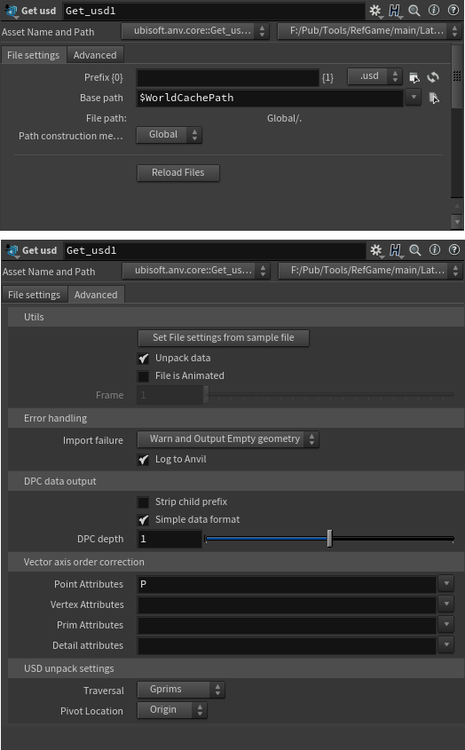
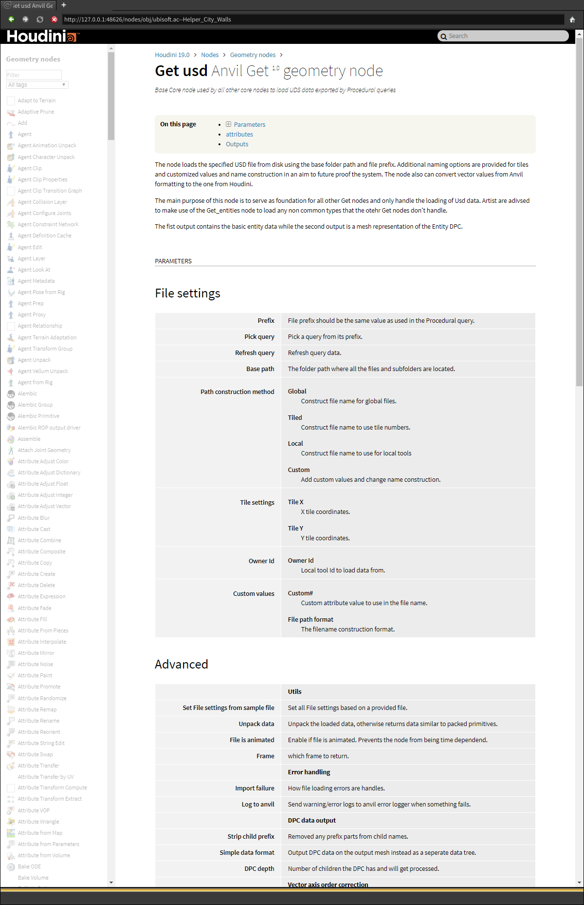

Anvil Pipeline core nodes
Ubisoft Mtl / January 2021
At Ubisoft I assisted in the development of a new Anvil <> Houdini pipeline using USD. The goal was to rebuild the procedural pipeline to improve performance and make use of the USD file format. The main pipeline design was done by a larger team and the design on the Houdini side with a smaller sub-team. My task in this was to implement the Nodes on the Houdini side, getting and sending data according to the decided design. Throughout the process Features were changed or added based on user feedback.
Node specifics
Key points for the implementation were. Stability, Performance, Maintainability, User friendly.
- Maintainability in this case was to make sure other people in the future could take over maintain the nodes, without too much head scratching. Clear node layouts per task/cluster, descriptive naming and commenting where needed.
- User friendly, is simply the end user experience. Doing all the hard complex work
automatically. Some examples are:
- Handles all of the data conversions, chancing vector orders, splitting array data back to arrays.
- Extracting Tool settings and converting them to a usable mesh/data format. Converting spline data from simple points to the correct spline type that matches the spline shape in Engine.
- Mesh/Entity cleanup options for better performance. But also a consistent UI throughout all the Core nodes. For all the import and export nodes.
  – Node Graphs.
 – UI for Basic Get node.
Documentation
Together with the development of the nodes I kept a detailed set of Confluence pages detailing the inner functions of each node to help future developers to maintain the nodes. And separate Confluence pages going over all the features and user interface. In addition to multiple beginner tutorials on how to use the new pipeline. Exporting data to Houdini, Importing in Houdini and then exporting data back to the Engine. Each node also has embedded help Wiki’s like normal Houdini nodes.  – Internal help wiki for one Get node.